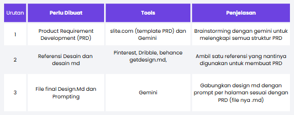
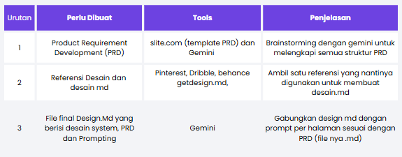

Modul 1: Brainstorming
1.1 Product Requirement Development (PRD)

PRD (Product Requirements Document) adalah dokumen yang menjelaskan apa yang harus dibuat dalam sebuah produk digital dan kebutuhan yang harus dipenuhi.
Dalam vibe coding, PRD penting karena AI bisa langsung menghasilkan kode berdasarkan requirement yang kita berikan. Tanpa PRD, AI cenderung menebak-nebak fitur, alur, struktur halaman, atau behavior aplikasi.
tes
Biasanya PRD berisi:
- Tujuan produk : masalah apa yang ingin diselesaikan.
- Target pengguna : siapa yang akan menggunakan produk.
- Fitur & requirement : fitur apa saja yang harus tersedia.
- User flow / user story : bagaimana pengguna berinteraksi dengan produk.
- Acceptance criteria : kondisi yang menentukan fitur dianggap selesai/berhasil
Brainstorming menggunakan gemini untuk pembuatan PRD :
contoh pada link https://share.gemini.google/fMb4a3Ynux2g
Intro & Goals
Whos it for?
Why are we building it?
Product Requirements
Competitor# Product Requirements Document (PRD): Kodemuda Landing Page & Catalog
**Product Name:** Kodemuda Landing Page & Catalog
**Version:** 1.0
**Owner:** Business Owner / Dev Team Kodemuda
**Status:** Ready for Development
---
## 1. Introduction & Goals
### 1.1 Who's It For? — Target Audience
**Pemilik UMKM & Bisnis Lokal**
Usaha kecil hingga menengah yang membutuhkan online presence profesional tanpa alur pengerjaan yang rumit.
**Perusahaan / Agensi / Organisasi**
Bisnis berskala menengah yang membutuhkan company profile resmi untuk meningkatkan kredibilitas di mata klien and partner.
**Startup / Klien Enterprise**
Pihak yang membutuhkan aplikasi web custom, sistem informasi, atau portal khusus yang disesuaikan dengan alur kerja internal.
**Client Prospektif**
Calon klien yang datang melalui inbound marketing, seperti Instagram, WhatsApp, atau jaringan komunitas developer dan teknologi.
### 1.2 Why Are We Building It? — Objectives & Goals
**Showcase Jasa & Paket secara Terstruktur**
Menyediakan satu platform terpusat untuk menampilkan layanan, pilihan paket harga, dan portofolio karya sehingga calon klien dapat memahami layanan tanpa perlu mendapatkan penjelasan dari awal melalui chat.
**Meningkatkan Konversi Inbound (Lead Generation)**
Memudahkan calon klien untuk melakukan konsultasi secara langsung melalui WhatsApp atau mengirimkan inquiry melalui form yang tersedia.
**Membangun Credibility & Social Proof**
Menunjukkan reputasi Kodemuda sebagai penyedia jasa pengembangan website berbasis teknologi modern, seperti React/Next.js dan Laravel, dengan standar performa dan tampilan yang tinggi.
---
# 2. Product Requirements
Website Kodemuda terdiri dari **4 halaman utama**, yaitu:
1. Beranda (Home)
2. Layanan & Paket Harga (Services & Pricing)
3. Portofolio & Studi Kasus (Portfolio / Case Studies)
4. Tentang & Kontak (About Us & Contact)
---
## 2.1 Halaman 1 — Beranda (Home)
### Hero Section
* Headline utama yang menjelaskan value proposition Kodemuda secara tegas.
* Sub-headline yang menyoroti kecepatan pengerjaan, desain modern, dan performa website.
* CTA utama: **"Konsultasi Gratis"** yang mengarah langsung ke WhatsApp.
### Ringkasan Keunggulan (Why Us)
Menampilkan beberapa keunggulan utama Kodemuda, seperti:
* Responsive Design
* SEO Friendly
* Pengerjaan Cepat
* Support Terjamin
### Preview Portofolio Unggulan
Menampilkan grid berisi **3–4 proyek terbaik** yang pernah dikerjakan.
### Preview Paket Utama
Menampilkan ringkasan **3 pilihan paket utama** dengan tombol yang mengarahkan pengguna ke halaman Layanan & Paket Harga.
### Testimoni & CTA
Menampilkan kutipan atau testimoni dari klien terdahulu serta CTA akhir yang mengajak calon klien melakukan konsultasi.
---
# 2.2 Halaman 2 — Layanan & Paket Harga (Services & Pricing)
### Header & Value Proposition
Menjelaskan layanan Kodemuda serta memberikan informasi harga secara transparan tanpa biaya tersembunyi.
### Pricing Cards
#### Paket Starter — Rp1.000.000+
**Target:**
UMKM, personal brand, event, and kebutuhan landing page tunggal.
**Fitur:**
* 1 halaman (Single Page)
* Mobile Responsive
* Integrasi WhatsApp Direct & Media Sosial
* Basic SEO Setup (Meta Tags & Google Search Console)
* Free Domain (.com/.id) & Hosting tahun pertama
* Pengerjaan ±3–5 hari kerja
**CTA:**
**"Pilih Paket Starter"**
---
#### Paket Company Profile — Rp3.000.000+
**Target:**
Perusahaan, agensi, sekolah, klinik, atau bisnis formal.
**Fitur:**
* Multi-page (Home, About Us, Services, Portfolio, Contact)
* CMS/Admin Panel untuk mengelola konten secara mandiri
* Standard/Advanced SEO Optimization
* Integrasi Google Maps & Form Inquiry Email
* Pengerjaan ±7–14 hari kerja
**CTA:**
**"Pilih Company Profile"**
---
#### Paket Enterprise / Custom — Custom
**Target:**
Startup, web application, e-commerce kompleks, sistem informasi internal, atau portal khusus.
**Fitur:**
* Full Custom Web Development
* Arsitektur Database & API Integration
* Fitur khusus seperti Management System, Booking/Checklist, Payment Gateway, dan Multi-role User
* High Security Standard
* Maintenance & SLA Support
**CTA:**
**"Konsultasi Kebutuhan Custom"**
### Tabel Perbandingan Fitur (Comparison Matrix)
Menyediakan tabel perbandingan ketiga paket berdasarkan:
* Jumlah halaman
* CMS/Admin Panel
* SEO
* Integrasi
* Maintenance
* Fitur lainnya
### FAQ Paket & Pembayaran
Menjelaskan informasi terkait:
* Termin pembayaran: **DP 50% di awal dan 50% setelah peluncuran**
* Perpanjangan domain and hosting tahunan
* Kuota revisi
* Ketentuan pengerjaan
* Ketentuan layanan lainnya
---
# 2.3 Halaman 3 — Portofolio & Studi Kasus (Portfolio / Case Studies)
### Header & Filter Kategori
Menyediakan filter interaktif berdasarkan kategori:
* Semua
* Landing Page
* Company Profile
* Custom Web App
### Grid Karya / Portofolio
Setiap kartu proyek menampilkan:
* Thumbnail visual
* Judul proyek
* Kategori proyek
* Teknologi yang digunakan, seperti Next.js, Laravel, dan Tailwind CSS
### Modal / Detail View Karya
Ketika pengguna memilih sebuah proyek, sistem menampilkan detail yang mencakup:
* Latar belakang proyek
* Permasalahan yang dihadapi klien
* Solusi yang diberikan Kodemuda
* Teknologi yang digunakan
* Tombol **Live Demo / Visit Site**
### Metrik & Impact
Menampilkan dampak atau hasil nyata dari proyek, seperti:
* Peningkatan loading speed
* Peningkatan performa website
* Peningkatan kemudahan pengelolaan konten
* Peningkatan pengalaman pengguna
---
# 2.4 Halaman 4 — Tentang & Kontak (About Us & Contact)
### Tentang Kodemuda
Menjelaskan:
* Profil Kodemuda
* Visi
* Filosofi dalam pengerjaan proyek
* Komitmen terhadap kualitas
* Standar pengembangan yang digunakan
### Alur Kerja (Our Workflow / Process)
Menampilkan tahapan pengerjaan secara transparan:
**Discovery / Konsultasi → Desain & Layout → Development → Testing → Launching**
### Formulir Kontak / Inquiry
Menyediakan form sederhana yang terdiri dari:
* Nama
* Email / Nomor WhatsApp
* Jenis paket yang diminati
* Deskripsi singkat kebutuhan project
### Informasi Kontak & Footer
Menampilkan:
* WhatsApp Admin
* Email resmi
* Instagram
* LinkedIn
* Area operasional
* Informasi tambahan lainnya
---
# 3. Competitor Analysis
Kodemuda memiliki beberapa kategori kompetitor yang menjadi referensi dalam pengembangan produk.
### 3.1 Fiverr
Marketplace jasa freelance internasional yang menyediakan berbagai layanan digital, termasuk web development dan web design.
### 3.2 Sribulancer / Fastwork
Marketplace freelance lokal yang menghubungkan freelancer dengan calon klien yang membutuhkan berbagai jenis jasa digital.
### 3.3 Software House / Enterprise Agency
Agensi atau software house berskala besar yang menyediakan layanan pengembangan website, aplikasi, dan sistem informasi untuk perusahaan.
### 3.4 DIY / Instant Website Builder
Platform seperti Wix, Squarespace, dan Canva Website yang memungkinkan pengguna membuat website secara mandiri menggunakan template dan website builder.
### 3.5 Standalone Freelancer
Freelancer perorangan yang menawarkan jasa pembuatan website melalui media sosial, komunitas, website pribadi, atau jaringan profesional.1.2 Referensi Desain & Design md

Design.md adalah dokumen yang menjelaskan bagaimana tampilan dan pengalaman pengguna (UI/UX) dari aplikasi yang akan dibuat.
Kalau PRD menjelaskan “apa yang harus dibuat”, maka Design.md menjelaskan “seperti apa tampilannya dan bagaimana pengguna berinteraksi dengannya.”
Contoh isi Design.md biasanya berisi:
- Design system : warna, font, spacing, border radius, shadow, dll.
- Layout : struktur dan susunan halaman.
- Komponen UI : button, card, navbar, modal, form, tabel, dll.
- Responsive design : tampilan desktop, tablet, dan mobile.
- User experience : bagaimana pengguna berpindah dan berinteraksi dengan halaman.
- Visual style : misalnya modern, minimalis, profesional, playful, atau corporate.
- State UI : loading, empty state, error, success, hover, disabled, dan sebagainya.
Hubungannya dengan PRD
Misalnya PRD Kodemuda mengatakan: "Website memiliki halaman Home dengan Hero Section, CTA, preview portfolio, pricing, dan testimonial."
Kemudian Design.md menerjemahkannya menjadi: "Hero menggunakan layout dua kolom, headline besar di sebelah kiri, visual di sebelah kanan, CTA utama menggunakan button primary, menggunakan warna brand tertentu, spacing tertentu, dan responsive menjadi satu kolom pada mobile."
Design md dapat dibuat secara manual atau lewat referensi desain yang sudah ada. Referensi dapat dicari pada halaman Pinterest, Dribbble, Behance, dan getdesign.md.
Setelah menemukan referensi, kita dapat membuat design md dengan Gemini sesuai PRD sebelumnya :
contoh pada link https://share.gemini.google/fMb4a3Ynux2g
1.3 Final Design Md dan Prompting

Prompt Design md (bisa di copy) :
[Copy PRD yang sudah dibuat dan paste disini]
coba buatkan aku design md nya secara lengkap dari foto yang aku kirim itu dari design style, color pallete, typography, hingga spacing system dan component inventory dan generate kan promt yang presisi untuk google stitch nya. PENTING, sesuaikan dengan halaman-halaman yang aku butuhkan atau laku istkan sebelumnya, nama websitenya adalah Kodemuda. buatkan prompt per halamannya. PENTING TAMPILAN ATAU DESAINNYA JANGAN SLOP AI ATAU MIRIP YANG DI GENERATE AI. Generate file pdf nyacontoh pada link https://share.gemini.google/fMb4a3Ynux2g
contoh referensi: referensi.jpg
contoh file:
final desainmd.pdf (format
pdf) |
final desainmd.md (format md)